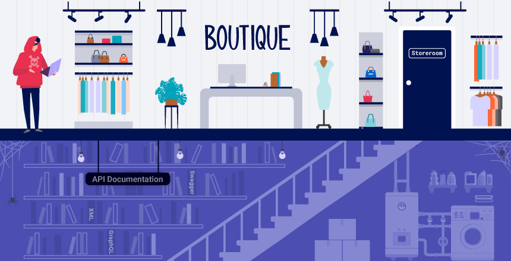

API testing
APIs (Application Programming Interfaces) enable software systems and applications to communicate and share data. API testing is important as vulnerabilities in APIs may undermine core aspects of a website's confidentiality, integrity, and availability.
All dynamic websites are composed of APIs, so classic web vulnerabilities like SQL injection could be classed as API testing. In this topic, we'll teach you how to test APIs that aren't fully used by the website front-end, with a focus on RESTful and JSON APIs. We'll also teach you how to test for server-side parameter pollution vulnerabilities that may impact internal APIs.
To illustrate the overlap between API testing and general web testing, we've created a mapping between our existing topics and the OWASP API Security Top 10 2023.

Related pages
To learn more GraphQL APIs, see our GraphQL API vulnerabilities Academy topic.
API recon
To start API testing, you first need to find out as much information about the API as possible, to discover its attack surface.
To begin, you should identify API endpoints. These are locations where an API receives requests about a specific resource on its server. For example, consider the following GET request:
GET /api/books HTTP/1.1
Host: example.com
The API endpoint for this request is /api/books. This results in an interaction with the API to retrieve a list of books from a library. Another API endpoint might be, for example,
/api/books/mystery, which would retrieve a list of mystery books.
Once you have identified the endpoints, you need to determine how to interact with them. This enables you to construct valid HTTP requests to test the API. For example, you should find out information about the following:
- The input data the API processes, including both compulsory and optional parameters.
- The types of requests the API accepts, including supported HTTP methods and media formats.
- Rate limits and authentication mechanisms.
API documentation
APIs are usually documented so that developers know how to use and integrate with them.
Documentation can be in both human-readable and machine-readable forms. Human-readable documentation is designed for developers to understand how to use the API. It may include detailed explanations, examples, and usage scenarios. Machine-readable documentation is designed to be processed by software for automating tasks like API integration and validation. It's written in structured formats like JSON or XML.
API documentation is often publicly available, particularly if the API is intended for use by external developers. If this is the case, always start your recon by reviewing the documentation.
Discovering API documentation
Even if API documentation isn't openly available, you may still be able to access it by browsing applications that use the API.
To do this, you can use Burp Scanner to crawl the API. You can also browse applications manually using Burp's browser. Look for endpoints that may refer to API documentation, for example:
/api/swagger/index.html/openapi.json
If you identify an endpoint for a resource, make sure to investigate the base path. For example, if you identify the resource endpoint
/api/swagger/v1/users/123, then you should investigate the following paths:
/api/swagger/v1/api/swagger/api
You can also use a list of common paths to find documentation using Intruder.
Using machine-readable documentation
You can use a range of automated tools to analyze any machine-readable API documentation that you find.
You can use Burp Scanner to crawl and audit OpenAPI documentation, or any other documentation in JSON or YAML format. You can also parse OpenAPI documentation using the OpenAPI Parser BApp.
You may also be able to use a specialized tool to test the documented endpoints, such as Postman or SoapUI.
Identifying API endpoints
You can also gather a lot of information by browsing applications that use the API. This is often worth doing even if you have access to API documentation, as sometimes documentation may be inaccurate or out of date.
You can use Burp Scanner to crawl the application, then manually investigate interesting attack surface using Burp's browser.
While browsing the application, look for patterns that suggest API endpoints in the URL structure, such as /api/. Also look out for JavaScript files. These can contain references to API endpoints that you haven't triggered directly via the web browser. Burp Scanner automatically extracts some endpoints during crawls, but for a more heavyweight extraction, use the JS Link Finder BApp. You can also manually review JavaScript files in Burp.
Interacting with API endpoints
Once you've identified API endpoints, interact with them using Burp Repeater and Burp Intruder. This enables you to observe the API's behavior and discover additional attack surface. For example, you could investigate how the API responds to changing the HTTP method and media type.
As you interact with the API endpoints, review error messages and other responses closely. Sometimes these include information that you can use to construct a valid HTTP request.
Identifying supported HTTP methods
The HTTP method specifies the action to be performed on a resource. For example:
GET- Retrieves data from a resource.PATCH- Applies partial changes to a resource.OPTIONS- Retrieves information on the types of request methods that can be used on a resource.
An API endpoint may support different HTTP methods. It's therefore important to test all potential methods when you're investigating API endpoints. This may enable you to identify additional endpoint functionality, opening up more attack surface.
For example, the endpoint /api/tasks may support the following methods:
GET /api/tasks- Retrieves a list of tasks.POST /api/tasks- Creates a new task.DELETE /api/tasks/1- Deletes a task.
You can use the built-in HTTP verbs list in Burp Intruder to automatically cycle through a range of methods.
Note
When testing different HTTP methods, target low-priority objects. This helps make sure that you avoid unintended consequences, for example altering critical items or creating excessive records.
Identifying supported content types
API endpoints often expect data in a specific format. They may therefore behave differently depending on the content type of the data provided in a request. Changing the content type may enable you to:
- Trigger errors that disclose useful information.
- Bypass flawed defenses.
- Take advantage of differences in processing logic. For example, an API may be secure when handling JSON data but susceptible to injection attacks when dealing with XML.
To change the content type, modify the Content-Type header, then reformat the request body accordingly. You can use the Content type converter BApp to automatically convert data submitted within requests between XML and JSON.
Using Intruder to find hidden endpoints
Once you have identified some initial API endpoints, you can use Intruder to uncover hidden endpoints. For example, consider a scenario where you have identified the following API endpoint for updating user information:
PUT /api/user/update
To identify hidden endpoints, you could use Burp Intruder to find other resources with the same structure. For example, you could add a payload to the /update position of the path with a list of other common functions, such as
delete and add.
When looking for hidden endpoints, use wordlists based on common API naming conventions and industry terms. Make sure you also include terms that are relevant to the application, based on your initial recon.
Finding hidden parameters
When you're doing API recon, you may find undocumented parameters that the API supports. You can attempt to use these to change the application's behavior. Burp includes numerous tools that can help you identify hidden parameters:
- Burp Intruder enables you to automatically discover hidden parameters, using a wordlist of common parameter names to replace existing parameters or add new parameters. Make sure you also include names that are relevant to the application, based on your initial recon.
- The Param miner BApp enables you to automatically guess up to 65,536 param names per request. Param miner automatically guesses names that are relevant to the application, based on information taken from the scope.
- The Content discovery tool enables you to discover content that isn't linked from visible content that you can browse to, including parameters.
Mass assignment vulnerabilities
Mass assignment (also known as auto-binding) can inadvertently create hidden parameters. It occurs when software frameworks automatically bind request parameters to fields on an internal object. Mass assignment may therefore result in the application supporting parameters that were never intended to be processed by the developer.
Identifying hidden parameters
Since mass assignment creates parameters from object fields, you can often identify these hidden parameters by manually examining objects returned by the API.
For example, consider a PATCH /api/users/ request, which enables users to update their username and email, and includes the following JSON:
{
"username": "wiener",
"email": "wiener@example.com",
}
A concurrent GET /api/users/123 request returns the following JSON:
{
"id": 123,
"name": "John Doe",
"email": "john@example.com",
"isAdmin": "false"
}
This may indicate that the hidden id and isAdmin parameters are bound to the internal user object, alongside the updated username and email parameters.
Testing mass assignment vulnerabilities
To test whether you can modify the enumerated isAdmin parameter value, add it to the PATCH request:
{
"username": "wiener",
"email": "wiener@example.com",
"isAdmin": false,
}
In addition, send a PATCH request with an invalid isAdmin parameter value:
{
"username": "wiener",
"email": "wiener@example.com",
"isAdmin": "foo",
}
If the application behaves differently, this may suggest that the invalid value impacts the query logic, but the valid value doesn't. This may indicate that the parameter can be successfully updated by the user.
You can then send a PATCH request with the isAdmin parameter value set to true, to try and exploit the vulnerability:
{
"username": "wiener",
"email": "wiener@example.com",
"isAdmin": true,
}
If the isAdmin value in the request is bound to the user object without adequate validation and sanitization, the user wiener may be incorrectly granted admin privileges. To determine whether this is the case, browse the application as wiener to see whether you can access admin functionality.
Preventing vulnerabilities in APIs
When designing APIs, make sure that security is a consideration from the beginning. In particular, make sure that you:
- Secure your documentation if you don't intend your API to be publicly accessible.
- Ensure your documentation is kept up to date so that legitimate testers have full visibility of the API's attack surface.
- Apply an allowlist of permitted HTTP methods.
- Validate that the content type is expected for each request or response.
- Use generic error messages to avoid giving away information that may be useful for an attacker.
- Use protective measures on all versions of your API, not just the current production version.
To prevent mass assignment vulnerabilities, allowlist the properties that can be updated by the user, and blocklist sensitive properties that shouldn't be updated by the user.